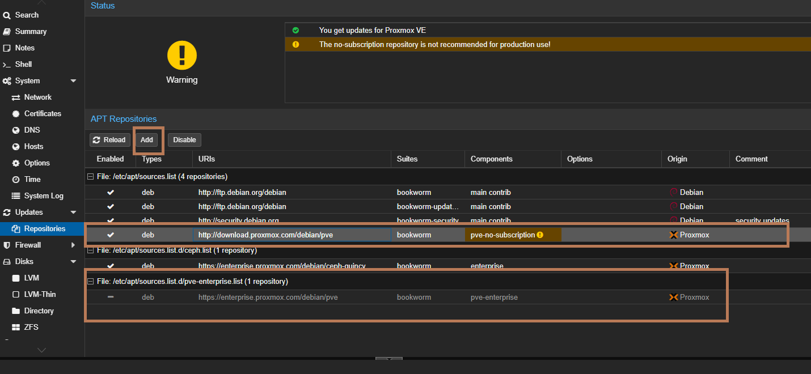
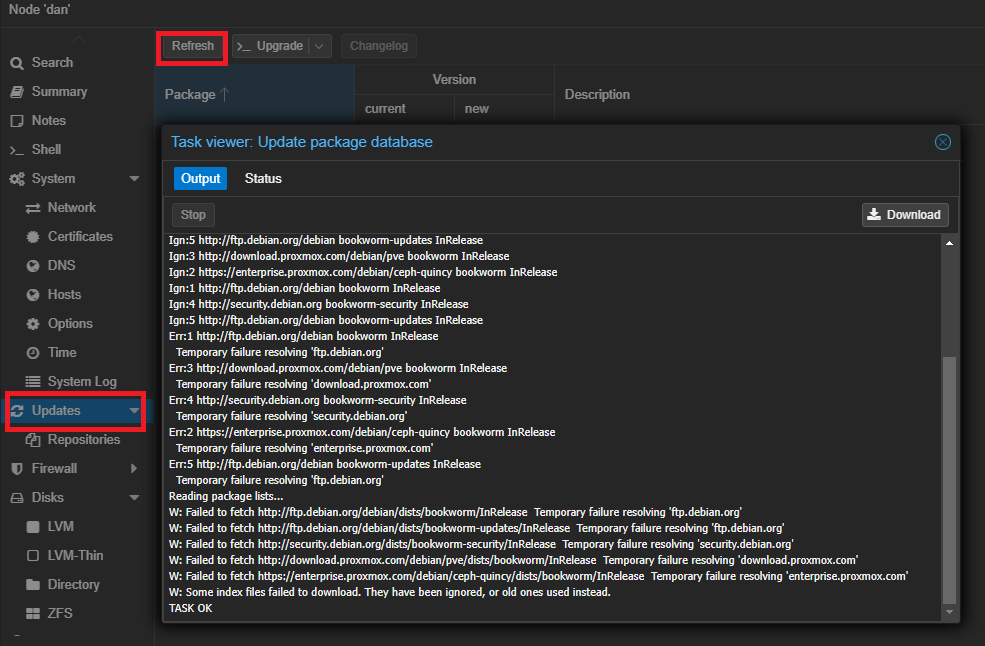
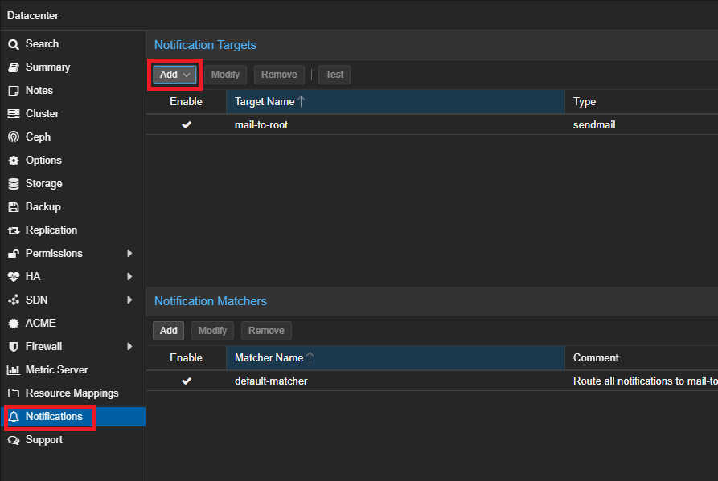

Before Create Datacenter
add ssh public key to hosts
nano /etc/ssh/ssh_config
PermitRootLogin yes
copy key to node1
ssh-copy-id -i root@192.168.1.128
copy key to node2
ssh-copy-id -i root@192.168.1.129
copy key t node3
ssh-copy-id -i root@192.168.1.130
Config Local DNS
Node1
connect to ssh
ssh root@192.168.1.129
nano /etc/hosts
192.168.1.128 pve1.local pve1
192.168.1.129 pve2.local pve2
192.168.1.130 pve3.local pve3
test for ping
ping pve2andping pve3
Wrong Repository
nano /etc/apt/sources.list
# deb https://enterprise.proxmox.com/debian/pve stretch pve-enterprise
dev https://download.proxmox.com/debian/pve stretch no-subscription
install htop and mc
apt install htop mc
apt update
Node2
connect to ssh
ssh root@192.168.1.129
nano /etc/hosts
192.168.1.128 pve1.local pve1
192.168.1.129 pve2.local pve2
192.168.1.130 pve3.local pve3
test for ping
ping pve1andping pve3
Wrong Repository
nano /etc/apt/sources.list
# deb https://enterprise.proxmox.com/debian/pve stretch pve-enterprise
dev https://download.proxmox.com/debian/pve stretch no-subscription
install htop and mc
apt install htop mc
apt update
Node3
connect to ssh
ssh root@192.168.1.130
nano /etc/hosts
192.168.1.128 pve1.local pve1
192.168.1.129 pve2.local pve2
192.168.1.130 pve3.local pve3
test for ping
ping pve1andping pve2
Wrong Repository
nano /etc/apt/sources.list
# deb https://enterprise.proxmox.com/debian/pve stretch pve-enterprise
dev https://download.proxmox.com/debian/pve stretch no-subscription
Install htop and mc
apt install htop mc
apt update
Create Cluster
On Node1
on Website:
Datacenter > Create Cluster >
Cluster Name : cluster1
Ring 0 Address:
Datacenter > Cluster > Join Information > Copy information (copy)
On Node2
Datacenter > Cluster > Join Cluster > Past (ctrl+V) >
password: ******* # from Node1
On Node3
Datacenter > Cluster > Join Cluster > Past (ctrl+V) >
password: ******* # from Node1
CLI Command
Status node
pvecm status
if you only want a list of all nodes, use:
pvecm nodes
qm list
migrate machine from node1 (101 = id of machine), to (pve2 = name of node2)
qm migrate 101 --online pve2 --with-local-disks
Root
# PermitRootLogin yes
PermitRootLogin without-password
Repository non-subscription


Notifications

Trusted TLS Certifications Requirements
Windows VirtIO Drivers
after install windows need install virtio.iso last versions:
https://fedorapeople.org/groups/virt/virtio-win/direct-downloads/archive-virtio/?C=M;O=D
Ventoy Install of Proxmox 8.1 halts at “Loading initial ramdisk”
I ran into the exact same problem.
(installed proxmox-ve_8.1-2.iso using ventoy-1.0.97-linux.tar.gz)
The file /etc/default/grub.d/installer.cfg introduces the rdinit=/vtoy/vtoy option:
GRUB_CMDLINE_LINUX="$GRUB_CMDLINE_LINUX rdinit=/vtoy/vtoy"
In order to remove the vtoy grub leftovers permanently, change it to:
GRUB_CMDLINE_LINUX="$GRUB_CMDLINE_LINUX"
Then run update-grub and reboot.
Edit the sources list:
nano /etc/apt/sources.list
Add these lines at the bottom:
# Proxmox VE pve-no-subscription repository provided by proxmox.com
# NOT recommended for production use
deb http://download.proxmox.com/debian/pve bookworm pve-no-subscription
# Security updates
deb http://security.debian.org/debian-security bookworm-security main contrib
Disable the Production Repository
Next, disable the production repository by commenting out these lines in pve-enterprise.list:
#deb https://enterprise.proxmox.com/debian/pve bookworm pve-enterprise
Configure Ceph for No-Subscription
nano /etc/apt/sources.list.d/ceph.list
Comment out the enterprise repository: by adding this # in front of the next line
#deb https://enterprise.proxmox.com/debian/ceph-quincy bookworm enterprise
Add the no-subscription repository:
deb http://download.proxmox.com/debian/ceph-quincy bookworm no-subscription
apt-get update && apt-get upgrade -y
How to determing if you are using grub or cmdline use efibootmgr -v
If you see something like “File(\EFI\SYSTEMD\SYSTEMD-BOOTX64.EFI)” then you are using systemd, not GRUB.
If you have GRUB edit config file:
nano /etc/default/grub
For Intel CPUs Intel CPUs add quiet intel_iommu=on:
GRUB_CMDLINE_LINUX_DEFAULT="quiet intel_iommu=on pt=on"
For AMD CPUs add quiet amd_iommu=on:
GRUB_CMDLINE_LINUX_DEFAULT="quiet amd_iommu=on pt=on"
Then update GRUB
update-grub
If you have cmdline edit config file
nano /etc/kernel/cmdline
insert in the end of the line quiet amd_iommu=on iommu=pt
Then refresh boot tool
proxmox-boot-tool refresh
Then reboot
Add Modules
vfio
vfio_iommu_type1
vfio_pci
vfio_virqfd #not necessary if kernel 6.2
Update modules
update-initramfs -u -k all
Reboot
Verify
dmesg | grep -e DMAR -e IOMMU or dmesg | grep -e DMAR -e IOMMU -e AMD-Vi
GPU Isolation From the Host (amend the below to include the IDs of the device you want to isolate)
Get device IDs: lspci -nn
echo "options vfio-pci ids=10de:____,10de:____ disable_vga=1" > /etc/modprobe.d/vfio.conf
Blacklist GPU drivers
echo "blacklist radeon" >> /etc/modprobe.d/blacklist.conf
echo "blacklist nouveau" >> /etc/modprobe.d/blacklist.conf
echo "blacklist nvidia" >> /etc/modprobe.d/blacklist.conf
echo "blacklist nvidiafb" >> /etc/modprobe.d/blacklist.conf
echo "blacklist nvidia_drm" >> /etc/modprobe.d/blacklist.conf
echo "blacklist i915" >> /etc/modprobe.d/blacklist.conf
Passing HDD
ls -n /dev/disk/by-id/
then
/sbin/qm set [VM-ID] -virtio2 /dev/disk/by-id/[DISK-ID]
Disable No-Subscription Pop-Up
sed -Ezi.bak "s/(Ext.Msg.show\(\{\s+title: gettext\('No valid sub)/void\(\{ \/\/\1/g" /usr/share/javascript/proxmox-widget-toolkit/proxmoxlib.js